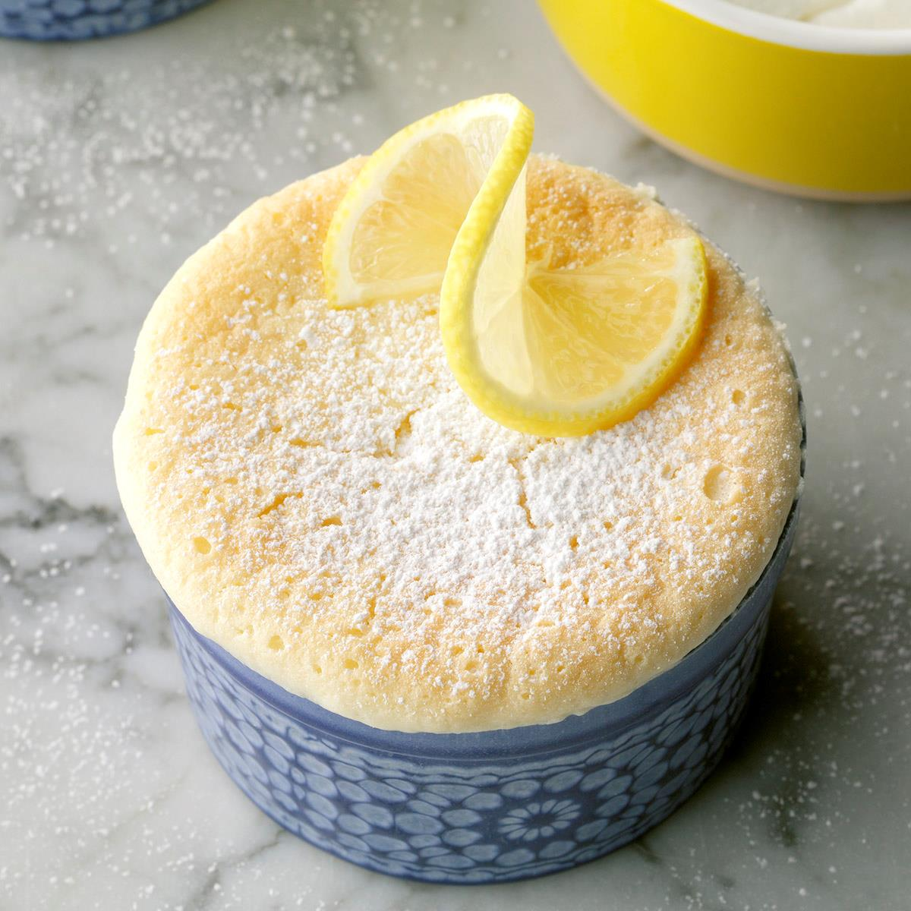

Ingredients
- 1 large egg, separated, room temperature
- 2 tablespoons lemon juice
- 1/2 cup sugar
- 1 teaspoon grated lemon zest
- 1/3 cup whole milk
- 1/8 teaspoon salt
- 2 tablespoons all-purpose flour
- Optional Confectioners' sugar, lemon slices and whipped cream
Instructions
- Preheat oven to 325°. In a bowl, beat egg yolk. Add sugar, milk, flour, lemon juice, zest and salt; beat until smooth. Beat egg white until stiff peaks form; gently fold into lemon mixture. Pour into 2 ungreased 6-oz. custard cups (cups will be very full).
- Place the cups in an 8-in. square baking pan. Pour boiling water into pan to a depth of 1 in. Bake until a knife inserted in the center comes out clean and top is golden, 40-45 minutes. If desired, top with confectioners' sugar, lemon slices and whipped cream.
Return to top
Return to main page